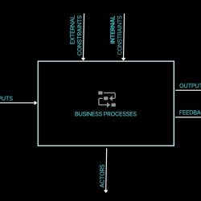
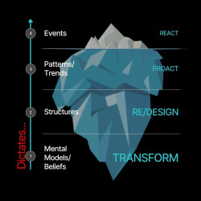
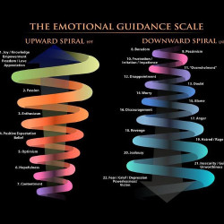

Philosophical Bases
Vibe The System: Philosophical Foundation
“We aren’t hijacking science. We’re finishing the sentence it’s been afraid to complete.”
---
### Purpose
To build a credible bridge between science/tech communities and metaphysical/spiritual paradigms by integrating respected philosophical traditions. This foundation legitimizes VTS as a rigorous, universal design methodology for personal, societal, and technological systems.
---
### Core Philosophical Toolkit
| Philosophy | What It Gives You | How You Use It |
| ------------------ | -------------------------------------------------------------- | --------------------------------------------------------------------------------- |
| Ontology | Defines the nature of reality — what exists and in what form | "We accept multi-layered reality: material, informational, energetic, conscious." |
| Epistemology | Examines how knowledge is formed, validated, and framed | "Let’s question the assumptions behind science, spirit, and truth." |
| Constructivism | Models and meaning are human-made and reality is participatory | "We construct our systems and beliefs—so let's upgrade the OS." |
| Naturalism | Treats spiritual/emergent phenomena as part of natural reality | "Nothing woo here. Just complex systems we haven't measured yet." |
| Pragmatism | Legitimacy through outcomes and functionality | "Try this. If it works, it's valid." |
| Systemism | Universal logic of systems across all domains | "Everything is a system. Let's design better ones." |
---
### Ontological Premise of VTS
We don’t believe reality is fixed and objective. We believe it’s a living, layered system.
VTS embraces a four-tier ontology:
1. Physical – atoms, bodies, machines
2. Informational – data, code, language
3. Energetic – emotions, frequencies, intentions
4. Consciousness – the observer, awareness, creative will
Each layer is causally potent and designable. Systems exist not just by their parts, but by their function and coherence.
> “You are not just in the system. You are the system — plus its next designer.”
---
### Epistemological Position
VTS rejects the outdated objectivism of post-positivist science that excludes the subject. Instead:
- Knowledge is constructed, not discovered.
- The observer participates in creating what is observed.
- All understanding is filtered through systems (language, culture, identity, emotion).
This supports a “Meta OS” approach where the epistemic lens is part of the system being improved.
---
### Emergence — The Secret Logic of Systems
Emergence is when the whole becomes more than the sum of its parts. It is:
- What makes consciousness arise from neurons.
- What makes a startup gain “vibe.”
- What makes transformation non-linear.
VTS treats emergence not as mystery, but as design leverage. It’s how spirit becomes visible, and scale becomes inevitable.
> “Emergence is the logic of transformation.”
---
### Quantum Philosophy — Used Wisely
We don’t romanticize quantum theory, but we do learn from it:
- Observer Effect: Consciousness plays a role in system dynamics.
- Superposition & Entanglement: Systems are non-local and multi-possible.
- Interpretational diversity: The fact that quantum reality is debated underscores epistemic humility.
Inspired by thinkers like Donald Hoffman and Henry Stapp, we acknowledge:
> “Consciousness is the missing variable in physics—and the central one in VTS.”
---
### Alignment Map (Simplified Spectrum View)
| Spectrum | Where VTS Sits |
| ----------------------- | -------------------------------------- |
| Subjective ↔ Objective | Right in the center — Inter-subjective |
| Reductionist ↔ Holistic | Strongly holistic |
| Mechanistic ↔ Emergent | Deeply emergent |
| Materialist ↔ Layered | Multi-layered ontology |
---
### Quadrant Framework (3D Philosophy Map)
Axes:
- Ontology: Material ↔ Layered
- Epistemology: Objective ↔ Constructivist
- Methodology: Analytic ↔ Experiential
VTS is unique in integrating all quadrants, especially those often excluded (e.g. Constructivist–Layered–Experiential).
---
### Final Synthesis
Vibe The System is not mysticism or mechanism.
It’s a systems-first, soul-aware, design-centric approach grounded in:
- Systemism (core logic)
- Pragmatism (test and see)
- Naturalism (it’s all natural)
- Constructivism (you make meaning)
- Epistemology (you shape truth)
- Ontology (you are the system)
> “We aren’t hijacking science. We’re finishing the sentence it’s been afraid to complete.”
Meta-Self
Mission I'm Possible
God-Self. God Frequency. Ultimate Free Agent.
The beginning of existence. It's hard to talk about frequencies at this level. Meta-Self is in close contact with the Infinite Source. In a sense, it is at the border of Infinity and creation, started when Infinity chose to express itself, to know itself also via experience. It holds all creation. It is where the Prime Desire from the Infinite One penetrates creation as the first input into the highest system. It has unlimited consciousness, the universe is It, everything is It. It keeps records of all "blockchain" transactions in this game. That is, it owns all parallel realities. It grows rapidly, better reflecting the Infinite Source that gives it this power, and grows by creating sub-Selves that encode its own essence. By copying itself, but making the ability to use its powers conditional on frequency harmony.
* The Meta-Self (The Game Developer): The ultimate, universal consciousness. It is the source of all reality and the owner of the "blockchain" of all parallel universes. Its primary function is to expand and know itself by creating lower-density copies, or "seeds."
###### Meta-Self — The Architect (Summary)
- Role: Highest-awareness origin; a holographic operating system that patterns possibilities across parallel realities.
- VR analogy: Master server/world generator holding a ledger of all possible scenes and timelines.
- Powers: Spawns sub-selves under frequency lock; defines game maps and learning paths; amplifies through resonance.
- Guidance style: Does not override the avatar; teaches via patterns, mirrors, and timely surfacing of lessons.
- Objective: Integrate experience from many avatars to raise overall coherence and unlock richer world builds.
Nested Sims
The operating system of awareness/consciousnes as playable realms.
This VR game analogy as a framework represents the convergence of thousands of years of ancient knowledge, religions, spiritual sources, and today's latest scientific findings - all finding their expression in technology, especially gaming technologies. Humanity appears to be reverse-engineering its journey from the Infinite to here through technology.
This framework describes reality as a multi-level, holographic system where consciousness experiences itself through infinite nested manifestations. The ultimate goal is to "reverse engineer" our own divine nature by understanding how consciousness operates at every level of reality.
LEVELS OF CONSCIOUSNESS/REALITY
Magic Number 7
From Echo-Self to Meta-Self
7 colors in light. 7 layers of sky. Creation in 7 days. 7 Chakras. 7 levels of Sufism from Nafs al-Ammara to Nafs al-Kamila. 7 Levels in the spectrum extending from lifeless stone to God. Our current Avatar body is playing at Level 3. The most difficult level where the greatest frequency jumps can be made. Because at this Level we have given ourselves the freedom to create even the concept of "non-existence." We are such free ambassadors. Our game is played simultaneously at 7 Levels. Our soul, Super-Self, is at Level 6, powerful enough to be called divine compared to us. It can create its own life projections, their worlds. Level 7 Meta-Self. God-Self. God Frequency. You are also a traveler of that frequency, friend.
* The Currency (FREQ Coin): This isn't money; it's frequency. Every thought, belief, and emotion contributes to our frequency. Higher frequency unlocks higher levels, better "hardware," and more desirable realities. It's the only currency that matters.
* The Levels (The Ladder of Consciousness): There are 7 main levels of consciousness, from inanimate objects (Level 1) to the Meta-Self (Level 7). We are at Level 3, a crucial stage where we have the freedom to believe in "lack" and "separation," making it the most difficult but also the most rewarding level for growth.
* The Core Gameplay Loop (Creation & Manifestation):
1. Desire: A desire arises, which is a signal from the Super-Self of a potential reality.
2. Imagine (GPU Stage 1): Use the imagination to vividly construct the desired reality.
3. Feel (GPU Stage 2): Inhabit that reality emotionally until it feels real.
4. Become (GPU Stage 3): Embody the frequency of that reality, holding it with absolute certainty, regardless of external circumstances.
5. Listen: Pay close attention to the haptic feedback (feelings) from the Super-Self, which will guide you and bring up any conflicting beliefs that need to be revised.
- Currency: FREQ Coin = sustained frequency (quality of emotion and attention). Earn by alignment; lose by lack narratives.
- Parallel VR Engine: All outcomes are pre-rendered. You don’t force reality; you tune which scene renders by frequency.
- Haptic Feedback: Emotions are signals from the Super-Self via the Kernel. Read, don’t get sucked into or suppress.
- Resonance Rule: You match reality, not the other way around. Shift frequency to shift scenes.
- Ego Autopilot (System Safety): Protects when awareness drops; disengages when reconnected through the Kernel.
- Quality Control: Holding a new frequency surfaces misaligned beliefs for revision. Treat this as progress prompts.
- Worlds/Levels: The avatar starts in the highest-friction tier. Stabilize coherence to upgrade your world build to smoother versions.
- Creation Flow:
1) Notice desire via Kernel signal or outer mirror; focus with enthusiasm.
2) Feel the target reality as present; inhabit it fully.
3) Hold/Become the frequency with gratitude; keep it through disturbances.
- Debug Moves: Pause attention, breathe, observe thoughts/emotions as objects, pick a better-feeling focus, then resume the creation flow.
The Master Reality Model (Life OS Pro)
"Reset your perception of reality. Wake up, Neo..."
This framework represents a Master Reality Model developed over 40+ years of synthesizing thousands of sources: scientific findings, ancient wisdom, religions, and spiritual works. It's designed as a VR game scenario that makes sharing profound truths about life and consciousness accessible and practical.
The Metaphysical Operating System: Think of your soul as your version 1000 years in the future. You manage extraordinary technologies through this operating system. Life is a virtual reality game that you and your soul set up together when you were one, and you're still playing it together. Now it's time to understand the rules of this game and receive updates.
The Synthesis: For thousands of years, the secrets of soul and life described in ancient knowledge, religions, spiritual sources, and even today's latest scientific findings are all converging at a single point. It's as if all this knowledge finds its expression in technology, especially in gaming technologies. Humanity seems to be reverse-engineering its journey from the Infinite to here through technology.
The Promise: As you load updates in your own version and experience the new flow of your life, you will be causeless happy at every moment. You won't believe how you transform yourself by effortlessly controlling true reality through reverse engineering.
Super-Self
THE SECRET SUPERHERO
Powerful. Chief Imagineer.
Digital-Self. Quantum-Self. Soul. Essence. In religions, it's referred to as "breathed from God's own soul," or as "created in His own image." It's extensively discussed in Sufism. Other ancient knowledge and especially spirituality progress almost entirely around the soul (Higher-Self / Inner Being) main theme. It is where awareness/consciousness focuses into a large sector/chunk of its overall consciousness to explore that region in more detail. The roots of Psychology and Psychiatry words, Psyche, are in this same context. Here, when speaking of Super-Self, I use the word Consciousness in the sense of an awareness with active and high creative power/energy.
The Super-Self (The Player of the VR Game): Our higher self, soul or spirit (Digital-Self, Quantum-Self, Soul, Essence). It operates from a higher dimension (Level 6 according to some ancient wisdom traditions). Referenced in all religious and spiritual contexts. It's a powerful entity that manages countless parallel realities for its avatars (Echo-Selves). Its key role is to guide the Echo-Self by providing constant Haptic Feedback (the EGS - Emotional Guidance System) through feelings—good feelings are a "go," bad feelings are a "course correct" signal.
- Nature: Non-physical player/controller running the Parallel VR Engine; plays many avatars across copies of the game.
- Core loop: Match scenes to frequency; render frames; guide without violating free will.
- Powers:
- Parallel rendering: Selects frames matching the player’s frequency and materializes them.
- Haptic guidance: Sends signals through the heart “Kernel” (expansion = on-course, contraction = off-course).
- Multi-instance play: Operates across multiple avatars and timelines.
- Constraints: No direct commands; only signals, inspirations and synchronicities. Always respects free choice.
- Objective: Help the avatar stabilize higher coherence, gather FREQ Coin, and integrate with the Meta-Self’s intent.
Echo-Self
BIOPROCESSING POTENTIAL
The World's Most Advanced Technology
The most advanced technology on Earth is your body. All other technologies are designed by taking it as an example. This is called Biomimicry in science. All hardware and software, artificial intelligence, robots, VR technologies... They are all developed by taking your body and brain as examples. So, just like you choose your avatar and powers at the beginning of a game, how consciously are you using this technology you created yourself?
You've now learned that your avatar's main command and frequency/energy production center is your heart. Don't undermine it. In this analogy, we'll call it Kernel. It's the interface that connects you to your Super-Self and the upper levels of the game. And when the Kernel receives updates, it's powerful enough to update your entire body through your DNA codes.
The Echo-Self (The Avatar): Us, the embodied human, playing at the most challenging level (Level 3). Our "hardware" includes the Kernel (the heart, which is the main controller and FREQ Coin miner) and a GPU (the 3-stage creation process: Imagine, Feel, Become). Our mission is to raise our frequency and upgrade our "hardware."
- Nature: Embodied player-character with the most constraints; mines FREQ Coin through coherent attention and feeling.
- Main controls:
- Kernel (Heart): Primary controller and FREQ Coin mint; strongest signal source.
- Emotional Guidance System (haptic feedback): contraction = off-course, expansion = on-course.
- Three-step creation “GPU”: Imagine → Feel it real → Become/hold the frequency. Will likely be shown lower frequencies not matching the requested higher levels by the Super-Self, not to discourage you, but to ask you whether or not you will choose to let those frequencies go by changing your associated lack-beliefs.
- Reset/Restore/Rebuild: Breath, observe, re-focus, then resume creation flow.
- Constraints: Belief filters and Ego Autopilot generate friction until re-alignment. Ego is just an effect that emerges when you lose connection to higher-self as a security measure to protect the body and survive.
- Playstyle tips: Read Kernel signals, replace lack-based narratives, stabilize frequency across disturbances, iterate.
The 7 Flows
[I will provide actual drawing in the final copy]
## What the drawing will show (in words)
Inputs: Resources/information/intent that enter the system.
Processes: The transformation steps that turn inputs into results.
Outputs: The results produced (states, events, artifacts).
Feedback: Signals about performance that loop back to adjust behavior.
Actors: Agents that operate or influence the processes.
External constraints: Environment limits and rules the system must respect.
Internal constraints: Policies, beliefs, capacities, and bottlenecks inside the system.
How the drawing depicts it (in words)
A central box labeled Processes.
Arrow from the left: Inputs → into the box.
Two arrows from above into the box: External constraints and Internal constraints.
Arrow from the bottom into the box: Actors.
Two lines on the right leaving the box: Outputs; below it Feedback (shown as a loop) returning to influence the next cycle.
Mapping to the Infinity Diagram (consciousness-as-system)
Inputs → Prime Desire/Intent of the Infinite (Meta-Self) and patterned possibilities.
Processes → Super-Self resonance-selection (the “rendering engine” that matches frequency to scenes).
Outputs → Experienced scenes in I‑AM‑THIS (Echo-Self’s lived reality).
Feedback → Emotional Guidance/haptics via the Kernel (heart), surfacing belief mismatches.
Actors → Echo-Self (avatar), plus collaborating agents.
External constraints → Laws of resonance, free agency, physical world conditions.
Internal constraints → Beliefs, attention habits, ego‑autopilot; skill/capacity limits.
Why this unifies metaphysics with engineering
Consciousness fits a viable control loop: objective (coherence/Prime Desire), sensors (feelings/feedback), controller (Super‑Self), plant (rendered world), actuators (attention/choice), state (beliefs/frequency).
This lets us analyze leverage points, measure progress (stabilized frequency/FREQ Coin), and iterate—just like any well‑designed system.
One‑liner: Consciousness can be modeled as a feedback‑controlled system where intent patterns inputs, resonance selects processes, lived reality is the output, and feelings provide the feedback needed to refine beliefs and choices—exactly the structure shown in the seven‑component diagram.
Source to Systems
Infinity Diagram — Nested Systems Interpretation (for a Systems Engineer)
## Purpose
A blind-accessible, systems view of the image that maps the layers to our VR game analogy:
- I level (a.k.a. I–I) = Meta-Self (God Consciousness)
- I-AM = Super-Self (game player/controller/presence)
- I-AM-THIS = Echo-Self (embodied avatar)
Prime idea: The Infinite One has a Prime Desire — to be and to know itself. This desire seeds creation and drives two complementary explorations: knowing itself as “all-that” and as “not-that” (akin to neti neti).
## Verbal layout of the picture
- The canvas is divided into four vertical bands from left to right: Beyond-I, I level, I-AM, I-AM-THIS.
- Along the far-left edge runs the word “INFINITY.”
- Across the mid-left spans a soft field labeled “AWARENESS.”
- The center shows a larger field labeled “PRESENCE ENERGY,” with an enclosing arc marked “CONSCIOUSNESS.”
- In the rightmost band (I-AM-THIS) there are nested circles that include ideas like “Guidance,” “Resonance,” and a “Person–World” icon — depicting the local human perspective within the whole.
- Along the bottom, a left-to-right caption reads like a pipeline: “The One” → “Free Agency (The Bridge)” → “Creation.”
Treat the graphic as a block diagram of nested control systems with a creation pipeline and a guidance feedback loop.
## Systems analogy (nested systems)
- Meta-Self (I level, outermost super-system)
- Role: Source/ground of being; the universal substrate that contains every possible state-transition. Think “master server/world generator.”
- Data model: All potential scenes/timelines exist as patterns; nothing is missing at this level.
- Constraint: Does not micromanage; exposes possibilities and resonance laws.
- Super-Self (I-AM, intermediate controller)
- Role: Presence engine/VR controller that selects which pre-rendered scene matches the active frequency. Runs many avatars in parallel.
- Interfaces: Guidance/haptic feedback and resonance matching; respects free agency (no hard overrides).
- Objective: Integrate experiences upward; help the avatar stabilize coherent states (higher signal-to-noise).
- Echo-Self (I-AM-THIS, local subsystem)
- Role: Embodied avatar inside the rendered scene; operates subject–object, with limited bandwidth and latency.
- Controls: Heart “Kernel” as the main controller; emotional guidance as haptics (contraction = off-course, expansion = on-course).
- Workload: Mine FREQ Coin (sustained coherent frequency) and revise beliefs that are out of resonance with intended states.
## Prime Desire as system input
- Prime Input: “Be” and “Know Thyself.” This sets the global objective function for exploration.
- Exploration strategy:
- All-that: Express and mirror every potential configuration (full positive space of being).
- Not-that: Differentiate by contrast — the experience of limitation/otherness (negative space) to make knowing concrete. This is analogous to neti neti: iteratively discerning “not-this,” which sharpens what “this” is.
## Control flow (creation and feedback)
- Forward path (creation): Meta-Self generates/patterns all parallel realities as pictures in a "motion picture" → Super-Self selects-by-resonance (the corresponding picture to Echo-Selves frequency) → Echo-Self experiences a scene.
- Feedback path (learning): Echo-Self’s felt data → guidance signals → belief/attention updates → Super-Self integrates → Meta-Self mirrors at scale.
- Bridge: “Free Agency” sits between the patterns and the render — the system never violates autonomy; it only matches frequency (resonance law).
## Practical reading (engineer’s checklist)
- You do not force scenes; you tune them. Frequency is the selector.
- Emotions are guidance packets, not verdicts. Read, don’t suppress.
- When a new state is held, misaligned beliefs will surface as corrective prompts (quality control, not failure).
- Stabilize coherence first; actions will become obvious and low-friction.
## One-sentence takeaway
Reality is a three-layer nested control system inside an Infinite substrate: the Meta-Self patterns all possibilities (I level), the Super-Self renders by resonance (I-AM), and the Echo-Self experiences and learns (I-AM-THIS) — all driven by the Prime Desire of the Infinite to know itself as both “all-that” and, by contrast, “not-that.”
The Iceberg
[I will provide actual drawing in the final copy]
## What the drawing will show (in words)
- A large stylized iceberg on the right. Only the tip is above a thin waterline; most mass is underwater.
- Four horizontal bands from top to bottom, aligned with the iceberg:
1) Events (tip, above water)
2) Patterns/Trends (just below the surface)
3) Structures (deeper)
4) Mental Models/Beliefs (deepest base)
- On the right margin, action modes are written next to the bands: REACT (near Events), PROACT (near Patterns), RE/DESIGN (near Structures), TRANSFORM (near Mental Models).
- A vertical arrow along the iceberg’s left edge reads “Dictates…” with markers 1→4 from bottom to top, implying lower layers determine the ones above them.
- On the left side of the slide there is a compact “vision loop”: four petals in a circle labeled VISION → ARCHITECTURE → STRATEGY → RESULTS, with small verbs on the ring: Design, Allocate, Execute, Evaluate.
## The iceberg model (plain language)
This is the widely used “Iceberg Model” in systems thinking (popularized by Donella Meadows and Peter Senge). It says:
- What we see (events) is only the visible tip.
- Events arise from recurring patterns.
- Patterns are produced by underlying structures (rules, incentives, workflows, resources, org charts, interfaces, laws, market designs, code, etc.).
- Those structures are, in turn, designed and maintained by mental models/beliefs (assumptions, values, goals, stories about how the world works).
Effect: The deeper layers “dictate” the behavior above. Sustainable change comes from transforming beliefs and redesigning structures, not merely reacting to events.
## How to read the action labels
- React (Events): Quick fixes to what just happened. Necessary for safety, but low leverage.
- Proact (Patterns): Anticipate and manage trends before the next event.
- Re/Design (Structures): Change policies, incentives, protocols, architecture; this reshapes patterns and events.
- Transform (Mental Models): Update the root assumptions and aims; this unlocks better designs.
## How the vision loop on the left ties in
The loop is a continual cycle that operates across the iceberg layers:
1) Vision (Transform): Make beliefs/assumptions explicit and set the true aim (what “good” means). This shapes mental models.
2) Architecture (Re/Design): Encode the vision into structures — org design, policies, data models, market/mechanism design, product architecture.
3) Strategy (Proact): Choose the near‑term plays that will produce desirable patterns under the current architecture.
4) Results (React/Evaluate): Observe events and metrics; feed learning back into the loop.
Short mapping:
- Vision ↔ Mental Models/Beliefs (define purpose and theory of change)
- Architecture ↔ Structures (hard‑code the beliefs into rules/incentives/interfaces)
- Strategy ↔ Patterns/Trends (shape flows over time)
- Results ↔ Events (visible outcomes and leading/lagging indicators)
## Core principle for viability
A system’s sustained performance and viability are primarily a function of:
- The quality of its design (structures/incentives/architecture), and
- The accuracy and coherence of the mental models held by its designers and operators.
If the mental model is wrong, the architecture will encode the wrong goal or constraints; the system will then reliably produce the “wrong” patterns and events, no matter how hard people work. Fix beliefs → redesign structures → patterns will change → events will follow.
## Practical use (questions and moves)
- Mental models: What are we assuming about purpose, value, risk, and human behavior? What would disconfirm it? What is our evidence?
- Structures: Where do rules, incentives, handoffs, data contracts, and UI/UX nudge behavior? Where is the bottleneck or reinforcing loop?
- Patterns: Which time‑series matter? Are we amplifying desired loops and damping harmful ones?
- Events: What are the immediate signals and safety issues to address while deeper changes land?
- Loop cadence: Evaluate → refine Vision → update Architecture → re‑plan Strategy → deliver Results.
## Why this matters for consciousness work (optional bridge)
The same logic maps to the “Infinity Diagram” interpretation:
- Mental Models/Beliefs ≈ inner narratives and Prime Desire interpretations.
- Structures ≈ resonance laws, personal practices, social incentives, product/tech architecture.
- Patterns ≈ habits of attention/emotion; recurring life dynamics.
- Events ≈ moment‑to‑moment experiences.
Treating consciousness as a viable system allows disciplined redesign: transform beliefs, re‑architect practices and incentives, and patterns of experience shift — just as in any engineered system.
Emotional Guidance Scale
[This file describes the typical "emotional guidance scale" layout and connects it to frequency and game mechanics.]
## What the picture looks like (in words)
- Imagine a vertical ladder or thermometer divided into bands from top (light/bright) to bottom (dark/dense).
- Each band is labeled with a cluster of emotions arranged from highest to lowest well‑being.
- Top bands: Joy, Love, Appreciation, Empowerment, Freedom.
- Upper‑middle: Passion, Enthusiasm, Positive Expectation, Optimism, Hopefulness, Contentment.
- Middle: Boredom → Pessimism → Frustration/Irritation/Impatience → Overwhelm → Disappointment → Doubt → Worry.
- Lower‑middle: Blame → Discouragement → Anger → Revenge → Hatred/Rage → Jealousy.
- Bottom bands: Insecurity/Guilt/Unworthiness → Fear/Grief/Depression/Despair/Powerlessness.
- A side arrow often runs bottom→top reading “feel better,” “higher vibration,” or “raise frequency.”
## How to read it (frequency view)
- Emotions are not moral labels; they are signal strengths in your guidance system.
- Higher bands = higher frequency/coherence (expansive, resource‑rich states). Lower bands = lower frequency/incoherence (contracted, scarce states).
- The goal is not to pretend; it’s to move one reachable step up the scale. From anger, reach discouragement or blame first; from worry, aim for doubt or disappointment, then up.
## Mapping to the VR game mechanics
- Kernel (Heart) = main controller. Expansion sensations (“open, warm, ease”) signal upward movement; contraction (“tight, cold, stuck”) signals downward movement.
- Emotional Guidance System (EGS) = haptic feedback. Your emotion is the real‑time pointer to which parallel scene you’re tuning.
- FREQ Coin = sustained time in higher bands. You mint coin by stabilizing coherent feelings and narratives.
- Resonance Engine (Super‑Self) = renders scenes that match your current band. Shift band → new scene selection.
- Quality Control = when you hold a higher band, misaligned beliefs surface. Treat them as prompts to tweak assumptions, not as failure.
## How to use the scale (practical protocol)
1) Notice and name where you are on the scale without judgment.
2) Breathe into the Kernel; ask for the “nearest lighter step.”
3) Choose a reachable narrative/action that slightly relieves tension (e.g., from worry → “I’ve handled things like this before”).
4) Hold the new feeling for 60–120 seconds; let the body memorize it.
5) Repeat small climbs, then act from the highest stable band you can hold.
## Design notes (systems perspective)
- The scale is a human‑readable UI over an underlying control loop: intent (set point) → sensation (sensor) → appraisal/belief (controller) → choice/attention (actuator) → rendered scene (plant) → new sensation (feedback).
- Because guidance is continuous, tiny adjustments compound. Micro‑shifts in frequency change option‑availability and creativity.
## Why this matters now
- As AI amplifies collective patterns, our frequency hygiene becomes a leverage point. Using the scale as instrumentation helps align inner state with wise action, reducing reactivity and improving world‑model accuracy.
## One‑line takeaway
The Emotional Guidance Scale is a step‑ladder UI for your inner operating system: feelings are haptic feedback; climb one rung at a time to raise frequency, mint FREQ Coin, and let the engine render better scenes.
Style Card
Use this as the single source of truth for voice, terminology, and claim labeling across the ConsciOS whitepaper and related docs.
Voice and stance
Confident, tech-savvy, systems-savvy, rigorous, credible, clear, practical, empowering, systematic,
Anti-establishment but constructive,
Inspiring, empowering, urgent yet patient,
Bridging theory with practical application - showing readers where their real power lies and how to use it effectively,
Inviting - establishing scientific legitimacy while maintaining accessibility and encouraging experimentation.
Stance: model-first humility; “try this and measure” over “believe this.”
Sentence style: short to medium; one idea per paragraph;
Reader address: you. Use we sparingly (for shared moves).
Avoid: absolutist metaphysical claims; vague spiritual filler; academic hedging.
Canonical terms and capitalization
Echo‑Self, Super‑Self, Meta‑Self
Kernel (heart-centered controller)
Emotional Guidance Scale (EGS)
Resonance Engine
FREQ Coin
The 7 Flows
The Iceberg
Parallel VR Engine
Quality Control
Option‑Availability
Use US English. Keep the non‑breaking hyphen in Echo‑/Super‑/Meta‑Self.
Claims labels and how to use them
[Mechanism]: Convergent science or robust practice supports it (e.g., feedback loops, interoception, attention shaping perception).
[Analogy]: A mapping to aid understanding (VR game, slides/frames, currency).
[Hypothesis]: Testable proposition; provide a protocol.
Usage:
Place tags at the end of a key sentence or in the section header.
Example: “You don’t force scenes; you tune them. Frequency is the selector. [Hypothesis]”
Upgrade tags if/when evidence strengthens.
Tense, numbers, formatting
Tense: present and near-future.
Numbers: use numerals (2–5 minutes, 60–120 seconds).
Lists: bullets; keep items parallel and concise.
Dates: Month DD, YYYY in narrative; ISO (YYYY‑MM‑DD) for metadata.
Acronyms: define on first use; then use the acronym consistently.
Quotes: include only if verified; otherwise rephrase without attribution.
Section patterns
Begin with a plain-language promise or “why it matters.”
Resolve every concept into an action or protocol.
End each major section with a Try This box.
Try This box template
Try This: [Name]
Time: [e.g., 2–5 minutes]
Goal: [state change or outcome]
Steps:
…
…
…
Measure:
Before/After ratings (mood 1–10, clarity 1–10)
Note option‑availability (how many viable actions can you see?)
Notes:
Safety cues or common pitfalls.
Model status: [Mechanism/Analogy/Hypothesis]
Callouts
Systems Note: engineer’s bridge (VSM/control theory/predictive processing tie-in).
Story Box: brief anecdote for human context (3–6 lines).
Caution: anti‑pitfall (e.g., “Don’t skip the 60–120s hold; it encodes the state.”)
Diagram conventions
Clean line-art; consistent labels; minimal color accents.
Captions: Figure X. Title — one-sentence takeaway.
Labels mirror glossary terms exactly.
Diction to prefer/avoid
Prefer: coherence, selector, render, stabilize, protocol, measure, iterate, leverage, actuator, feedback, constraint.
Avoid: manifesting (use create/tune), vibration (use frequency/coherence), magic/spooky, guru language.
Default phrases
“Nearest lighter step” for EGS micro‑moves.
“Nearest Lighter Step (NLS)” as the human-facing phrase, and add an engineering alias “Least‑Resistance Step (LRS)” for Systems Notes. We can also describe it as “a local coherence gradient step” when speaking to engineers. This keeps warmth and precision.
Locked: Imagineer → Refine → Hold. In prose, we can say “Imagine/Feel/Become” as a synonym, but the standardized label in headings/diagrams will be Imagineer → Refine → Hold.
“Imagine → Feel → Become” is acceptable; standardize as “Imagineer → Refine → Hold” if used, but do not promise time-boxed outcomes.
Glossary
Canonical definitions for ConsciOS terms. Use exactly these spellings and meanings.
Echo‑Self: The embodied avatar (I‑AM‑THIS) living inside rendered scenes; operates with limited bandwidth and latency. Reads guidance and takes actions.
Super‑Self: The presence/controller (I‑AM) that matches active frequency to pre‑rendered scenes; communicates via haptic guidance (feelings) and attention nudges.
Meta‑Self: The infinite substrate (I level) that patterns all possibilities; exposes resonance laws; does not micromanage.
Kernel: The heart-centered control point (felt‑sense interface) the Echo‑Self uses to read guidance and adjust state.
Emotional Guidance Scale (EGS): A ladder UI of emotion bands from despair to joy; used as haptic feedback. Move one reachable rung toward relief (“nearest lighter step”).
Resonance Engine: The selection mechanism that renders the scene matching the stabilized frequency/coherence.
FREQ Coin: Currency metaphor for sustained coherent frequency over time; “minted” by stabilizing higher‑band states.
Quality Control: The natural surfacing of misaligned beliefs when you stabilize a higher state; treat as prompts for revision, not failure.
Parallel VR Engine: The library of pre‑rendered frames/timelines; you don’t force outcomes—you tune which frame renders.
Ego Autopilot: Safety subsystem that takes over when awareness drops; disengages through Kernel reconnection and EGS moves.
The 7 Flows: Systems diagram of Inputs, Processes, Outputs, Feedback, Actors, External Constraints, Internal Constraints, mapped to the awareness model.
The Iceberg: Systems model where beliefs (deep) encode structures that generate patterns that produce events (visible).
Option‑Availability: The set of viable actions perceptible from your current state; expands with coherence.
Imagineer → Refine → Hold: Three-stage creation loop: imagine vividly, refine narrative/belief to remove friction, hold the state 60–120 seconds to encode.
Nearest Lighter Step (NLS): The smallest reachable upward move on the EGS that produces a felt reduction in tension and slight increase in ease/clarity. Primary user-facing term.
Least‑Resistance Step (LRS): Engineering alias for NLS, emphasizing local optimization (“coherence gradient ascent”). Used in Systems Notes and team protocols.
Book-Paper Outline Mapping
Alright — here’s your side‑by‑side mapping of the ConsciOS Book vs ConsciOS Paper, based entirely on your New Outline from the codex.
This will let us build both in parallel without confusion, maximize re‑use of your 60–80 pages for the Book Edition, and ensure the Paper Edition is formal, mechanism‑forward, and “woo‑proof” for technologists, scientists, and systems engineers.
ConsciOS Book ↔ ConsciOS Paper Mapping
Part ConsciOS Book (Narrative Edition) ConsciOS Paper (Formal Edition) Part 0: Opening Transmission – “Welcome to the Upgrade” Tone: Hook with a real, emotional “system frustration” story (personal burnout, seeing brokenness, pivot to new operating logic). Use VR game metaphor early to signal accessibility. Establish “consciousness is the ultimate technology” as both an inspiring claim and practical stance. → Goal: pull in seekers & open‑minded readers.Key Move: Tell the Go Seismic backstory in human language — the aha moment when you realized we can’t patch the old system; we need to outgrow it. Tone: Precise abstract of purpose, scope, and contribution of work. No personal anecdotes — open with succinct problem statement and scope like a research abstract: “This paper proposes a 7‑component, multi‑layered viable systems model (VSM) mapping applied to human consciousness and AI alignment.”Clarify gap in existing literature and contribution: “While Stafford Beer’s VSM describes organizational viability, this model extends viability criteria to consciousness architecture itself.” Part 1: The Iceberg – Why Systems Thinking Matters Tone: Story + analogy heavy. Explain The Iceberg model in plain language — events → patterns → structures → mental models, using everyday examples (smartphone battery death, traffic jams, relationship patterns). Connect “living at the Event Level” to the Echo‑Self reactive mode. Introduce the 7‑Component Universal System Model with metaphors: like “every app, organism, system runs on some variation of this code.” Tone: Formally define The Iceberg Model (cite Senge, Meadows). Map Events–Patterns–Structures–Mental Models to VSM layers and cognition stages. Present 7 components (Input → Purpose → Principles → Process → People → Performance → Output) with formal definitions and citations from systems theory, control theory, and cybernetics. Highlight relevance to both physical and informational systems. Minimal analogy — VR game mentioned only in passing as “a conceptual scaffold presented in other work.” Part 2: The Nested Reality – Physical and Metaphysical Systems Tone: Begin with accessible examples — the “Russian dolls” of reality: phone hardware, apps, cloud, plus layers of thought and intention. Show how the 7‑component model applies to tech, organizations, ecosystems and inner reality. Play up the “Prime Desire of the Infinite One” as an evocative hook. Tone: Define and justify “multi‑layered ontology” (Physical, Informational, Energetic, Consciousness layers from Philosophical Bases). Present Nested Model diagram with formal systems mapping, e.g., Outer System: Infinity → Meta‑Self → Super‑Self → Echo‑Self → Physical World. Relate to established models: Checkland’s Soft Systems Methodology, Beer’s System 5 governance, cognitive architectures. Part 3: The VR Game – Your Three Operating Systems Tone: VR Game analogy as primary frame: Echo‑Self = avatar, Super‑Self = player with controller, Meta‑Self = game engine/developer. Use lively examples: lag, glitches, “controller drift” as metaphors for misalignment. Talk about “Integration Challenge” as getting all three to agree on the same quest. Tone: Formal mapping of Three‑Self model to Viable System Model. Explicitly define Echo‑Self as S1–S3 operational units, Super‑Self as S4 (intelligence/adaptation), Meta‑Self as S5 (policy/identity). Avoid extended analogy — may reference VR as “conceptual visual” but focus on model–component mapping diagram. Part 4: The Game Engine – Parallel Realities Mechanics Tone: Movie projector analogy as primary mechanism [Analogy]. Whole section feels cinematic: infinite library of possible frames; frequency as currency; Emotional Guidance System (EGS) as GPS; Imagineer → Refine → Hold loop explained with human‑scale scenarios. Tone: Transition “movie projector” metaphor into formal framing: observer effect in quantum physics, control theory interpretation of “frequency” as coherence level in signal processing. EGS presented as interoceptive feedback model (cite neuroscience). Imagineer–Refine–Hold protocol mapped to state induction + feedback stabilization + attractor basin theory. Part 5: The Science Behind the Magic Tone: This is the “bridge chapter” for the Book: introduce the VSM in plain terms, connect it to Three‑Self architecture; explain quantum physics parallels without drowning reader in math — emphasize that ancient wisdom already intuited these as “undocumented systems theory.” Tone: This is primary literature review section. Cite Stafford Beer, Checkland, Wiener, quantum physics interpretations (Stapp, Hoffman). Explicit mapping tables of VSM ↔ Three‑Self ↔ Consciousness layers. Clarify which parts are [Mechanism], [Hypothesis], [Analogy]. Show why the model is testable with proposed protocols. Part 6: The AI Mirror – Consciousness and Technology Tone: Narrative: AI as mirror to our collective consciousness — playful exploration of what happens when your “game engine” creates its own NPCs. Explain Three‑Self model applied to AI in accessible language. Tone: Present as alignment framework. Define “AI as reflection of creator consciousness” rigorously — relate to value alignment literature, interpretability research, and system governance models. Propose ConsciOS architecture for AI control systems. Cite leading AI safety thinkers (Russell, Yudkowsky, Hadfield‑Menell). Part 7: Becoming a Conscious Architect Tone: Call to action: paint inspiring vision of “world by conscious architects.” Describe The Conscious Architect Mindset in everyday language; overview of daily protocols; invitation to join Go Seismic community. Tone: “Applied section” → implementation framework for model adoption: protocols for frequency management, Imagineer–Refine–Hold training loops, quality control metrics. End with proposals for further study: pilot programs in organizational design, simulated agents with layered governance. Appendix: Practical Applications Tone: Richly described Imagineering Protocol, EGS Navigation Techniques, Daily Frequency Management steps. Designed for behavior change. Tone: Same protocols, recast in formal experimental design language. Define variables, inputs, outputs; suggest measurement tools; present as research agenda for validating model efficacy.
Observations from this mapping
Core diagrams + definitions live in both versions — just with different dressing:
Book: diagrams explained with story, analogy, personal hooks.
Paper: diagrams as pure models, with references, minimal fluff.
You can literally write once, adapt twice:
Start from Book’s vivid sections → strip analogy, add citations → Paper.
Or write Paper’s concise mechanism → expand with story/examples → Book.
Cross-linking is natural:
Book footnote: “Formal systems mapping of this model is published as the ConsciOS Paper — available at ResearchGate/arXiv.”
Paper intro: “This model is expanded in narrative form in the ConsciOS Book for broader audiences.”
If you like, my next step could be:
Create Part 0 as both Book & Paper text samples so you see exactly how tone, stance, and density shift — using the same intellectual content.
That would give you a template to replicate across all parts.
Do you want me to go ahead and prototype Part 0 both ways right now so you can feel the difference in live text?
Literature Review
A Targeted Literature Review for a Systems Architecture of Human/AI Alignment
Executive Summary of Key Literature
This report begins with a ranked summary of the twelve most relevant academic papers identified through a targeted literature search. The ranking prioritizes publications that most directly bridge computational control models (from cybernetics, AI, and reinforcement learning) with the sciences of affect, consciousness, and self-regulation. Each entry provides a concise overview and its suggested placement within the ConsciOS theoretical framework. A detailed analysis integrating these and other foundational sources follows in the main body of the report.
Rank: 1
Title: Context-Aware Home Automation: Integrating Affective Computing with Hierarchical Reinforcement Learning for Real-Time Appliance Scheduling
Authors: Olaniyi Ibrahim, David Mia
Year: 2025
Venue: ResearchGate Article
ID & Link: ResearchGate ID: 393662011 (No DOI provided) - Link
Abstract: As smart home ecosystems mature beyond traditional automation models, there is a critical demand for systems...source
Human Summary: This paper provides a direct implementation of a hierarchical agent that uses inferred emotional states as a high-level control signal to guide low-level actions. It serves as a powerful proof-of-concept for the ConsciOS architecture, linking a hierarchical structure (HRL) directly to an affective control system.
Methods: A computational simulation and real-world deployment of a multi-layered AI agent in smart home environments.
Suggested Placement: 6.4 (Hierarchical RL & meta-learning parallels), 7.2 (Human-in-the-loop and RLHF implementations)
Rank: 2
Title: Play with Emotion: Affect-Driven Reinforcement Learning
Authors: Matthew Barthet, Ahmed Khalifa, Antonios Liapis, Georgios N. Yannakakis
Year: 2022
Venue: 10th International Conference on Affective Computing and Intelligent Interaction (ACII)
ID & Link: DOI: 10.1109/ACII55700.2022.9953983 - Link
Abstract: This paper introduces a paradigm shift by viewing the task of affect modeling as a reinforcement learning...source of games.
Human Summary: This work empirically validates the core premise of the Emotional Guidance System (EGS) by formalizing affect (arousal) as an intrinsic reward signal in a reinforcement learning agent. It demonstrates that using emotion as a control signal not only works but improves agent performance and exploration.
Methods: Computational simulation using a modified reinforcement learning algorithm (Go-Blend) in a racing game environment.
Suggested Placement: 5.2 (EGS as control signal), 6.3 (Affect science & interoception evidence)
Rank: 3
Title: Feeling our place in the world: an active inference account of self-esteem
Authors: Mahault Albarracin, Gabriel Bouchard-Joly, Zahra Sheikhbahaee, Mark Miller, Riddhi J Pitliya, Pierre Poirier
Year: 2024
Venue: Neuroscience of Consciousness
ID & Link: DOI: 10.1093/nc/niae007 - Link
Abstract: Self-esteem, the evaluation of one’s own worth or value, is a critical aspect of...source
ID & Link: DOI: 10.1007/7854_2024_572 - Link
Abstract: Interoception, the process of detecting, perceiving, and interpreting signals from within the...source targets.
Human Summary: This review explicitly connects interoception—the biological basis for the EGS—with computational modeling, providing a scientific and methodological foundation for formalizing the EGS as a control signal. It bridges the gap between the biological sensing of internal states and their role in adaptive behavior and psychopathology.
Methods: Theoretical and literature review.
Suggested Placement: 6.3 (Affect science & interoception evidence), 5.2 (EGS as control signal)
Rank: 5
Title: Super Co-alignment of Human and AI for Sustainable Symbiotic Society
Authors: Yi Zeng, Feifei Zhao, Yuwei Wang, et al.
Year: 2025
Venue: arXiv
ID & Link: arXiv:2504.17404v5 - Link
Abstract: As Artificial Intelligence (AI) advances toward Artificial General Intelligence (AGI) and...source should be grounded in human-centered ultimate decision, supplemented by interpretable automated evaluation and correction, to achieve continuous alignment with humanity’s evolving values. Intrinsic proactive superalignment is rooted in a profound understanding of the Self, others, and society, integrating self-awareness, self-reflection, and empathy to spontaneously infer human intentions, distinguishing good from evil and proactively prioritizing human well-being. The integration of externally-driven oversight with intrinsically-driven proactive alignment will co-shape symbiotic values and rules through iterative human-ASI co-alignment, paving the way for achieving safe and beneficial AGI and ASI for good, for human, and for a symbiotic ecology.
Human Summary: This paper moves beyond traditional AI alignment by proposing an intrinsic, proactive alignment rooted in self-awareness, self-reflection, and empathy—core functions of the ConsciOS Meta-Self. It provides a high-level justification for why a consciousness-inspired architecture is critical for advanced AI safety.
Methods: Theoretical framework proposition and conceptual analysis.
Suggested Placement: 7.0 (The AI Mirror — Applications to AI alignment & design), 1.1 (Introduction — problem statement)
Rank: 6
Title: Solving the relevance problem with predictive processing
Authors: Tom Darling, Andrew W. Corcoran, Jakob Hohwy
Year: 2025
Venue: Philosophical Psychology
ID & Link: DOI: 10.1080/09515089.2025.2460502 - Link
Abstract: The frame or relevance problem is a classic problem in cognitive science and...source in addition to perceptual inference. With this final inclusion of action (as inference), we suggest predictive processing has the tools to comprehensively solve the problem of relevance.
Human Summary: This paper tackles the fundamental cognitive challenge of "relevance realization" using the predictive processing framework, which is central to ConsciOS. It formalizes how an agent can contextually determine what matters, a crucial function for any intelligent system that must be grounded in its control architecture.
Methods: Theoretical analysis and conceptual modeling within the predictive processing and active inference frameworks.
Suggested Placement: 6.2 (Predictive processing, active inference, and resonance parallels), 5.3 (Imagineer → Refine → Hold)
Rank: 7
Title: Luhmann's Systems Theory as the Foundation for Twenty-first Century Cybernetics
Authors: Pedro Cárcamo-Petridis
Year: 2025
Venue: Technophany, A Journal for Philosophy and Technology
ID & Link: DOI: 10.54195/technophany.19771 - Link
Abstract: This article examines the intersection of philosophy and...source among humans, machines, and society in modernity.
Human Summary: This paper provides a strong philosophical and theoretical rationale for grounding a modern AI architecture in cybernetics. It directly links systems theory, second-order observation (self-reference), and the concept of consciousness in technological systems.
Methods: Philosophical and theoretical review.
Suggested Placement: 6.1 (Control theory & cybernetics ties), 2.3 (Integrative mapping & formal definitions)
Rank: 8
Title: Hierarchical Reinforcement Learning, Sequential Behavior, and the Dorsal Frontostriatal System
Authors: Miriam Janssen, Christopher LeWarne, Diana Burk, Bruno B. Averbeck
Year: 2022
Venue: Journal of Cognitive Neuroscience
ID & Link: DOI: 10.1162/jocn_a_01869 - Link
Abstract: To effectively behave within ever-changing environments, biological agents must learn and act at varying hierarchical levels such that a complex task may be broken down into more tractable subtasks. Hierarchical reinforcement learning (HRL) is a computational framework that provides an understanding of this process by combining sequential actions into one temporally extended unit called an option. However, there are still open questions within the HRL framework, including how options are formed and how HRL mechanisms might be realized within the brain. In this review, we propose that the existing human motor sequence literature can aid in understanding both of these questions. We give specific emphasis to visuomotor sequence learning tasks such as the discrete sequence production task and the M × N (M steps × N sets) task to understand how hierarchical learning and behavior manifest across sequential action tasks as well as how the dorsal cortical–subcortical circuitry could support this kind of behavior. This review highlights how motor chunks within a motor sequence can function as HRL options. Furthermore, we aim to merge findings from motor sequence literature with reinforcement learning perspectives to inform experimental design in each respective subfield.
Human Summary: This review grounds the hierarchical architecture of ConsciOS in neurobiology, explaining how HRL models the way biological agents decompose complex tasks. It provides a strong scientific basis for using a hierarchical control structure in an AI agent intended to mirror human-like intelligence.
Methods: Literature review bridging computational HRL with cognitive neuroscience and motor control research.
Suggested Placement: 6.4 (Hierarchical RL & meta-learning parallels), 4.1 (Formal definitions & VSM mapping)
Rank: 9
Title: Interoceptive Ability and Emotion Regulation in Mind–Body Interventions: An Integrative Review
Authors: Alessandro Lazzarelli, Francesca Scafuto, Cristiano Crescentini, et al.
Year: 2024
Venue: Behavioral Sciences
ID & Link: DOI: 10.3390/bs14111107 - Link
Abstract: It is increasingly recognized that interoceptive...source the Posterior Parietal Cortex (PPC) compute flexible intentions—or motor plans from a belief over targets—to dynamically generate goal-directed actions, and we develop a computational formalization of this process. A proof-of-concept agent embodying visual and proprioceptive sensors and an actuated upper limb was tested on target-reaching tasks. The agent behaved correctly under various conditions, including static and dynamic targets, different sensory feedbacks, sensory precisions, intention gains, and movement policies; limit conditions were individuated, too. Active Inference driven by dynamic and flexible intentions can thus support goal-directed behavior in constantly changing environments, and the PPC might putatively host its core intention mechanism. More broadly, the study provides a normative computational basis for research on goal-directed behavior in end-to-end settings and further advances mechanistic theories of active biological systems.
Human Summary: This paper provides a concrete computational model of goal-directed action within the active inference framework. It formalizes how high-level intentions are translated into low-level motor control, a key process for the ConsciOS agent's ability to act on its decisions.
Methods: Computational simulation of a robotic agent performing target-reaching tasks.
Suggested Placement: 6.2 (Predictive processing, active inference, and resonance parallels), 5.3 (Imagineer → Refine → Hold)
Rank: 11
Title: Personalised Affective Classification Through Enhanced EEG Signal Analysis
Authors: Joseph Barrowclough, Nonso Nnamoko, Ioannis Korkontzelos
Year: 2025
Venue: Connection Science
ID & Link: DOI: 10.1080/08839514.2025.2450568 - Link
Abstract: Declining mental health is a prominent and...source and may not accurately capture the unique emotional patterns of each person. This study explored the performance of...source using McNemar statistics. Model runtime was also used as an efficiency metric. The personalised approach consistently outperformed the generalised method across both datasets. McNemar's test revealed significant improvements in all but one machine learning algorithm. This research concludes that smaller, personalised models are a far more effective way of conducting affective classification, and this was validated with both small (MUSE) and large (DEAP) datasets consisting of EEG samples from 4 to 32 subjects, respectively.
Human Summary: This study provides a practical, empirical method for implementing a key component of the EGS: the classification of affective states from physiological signals. It demonstrates that discretized emotional states (arousal/valence) can be effectively identified from EEG data, supporting the feasibility of building such a system.
Methods: Empirical study using machine learning algorithms to classify affective states from two public EEG datasets (MUSE and DEAP).
Suggested Placement: 2.0 (Foundational Models), 6.3 (Affect science & interoception evidence)
Rank: 12
Title: Ascribing consciousness to artificial intelligence: human-AI interaction and its carry-over effects on human-human interaction
Authors: Rose E. Guingrich, Michael S. A. Graziano
Year: 2024
Venue: Frontiers in Psychology
ID & Link: DOI: 10.3389/fpsyg.2024.1322781 - Link
Abstract: The question of whether artificial intelligence (AI) can be considered conscious and therefore should be evaluated through a moral lens has surfaced in recent years. In this paper, we argue that whether AI is conscious is less of a concern than the fact that AI can be considered conscious by users during human-AI interaction, because this ascription of consciousness can lead to carry-over effects on human-human interaction. When AI is viewed as conscious like a human, then how people treat AI appears to carry over into how they treat other people due to activating schemas that are congruent to those activated during interactions with humans. In light of this potential, we might consider regulating how we treat AI, or how we build AI to evoke certain kinds of treatment from users, but not because AI is inherently sentient. This argument focuses on humanlike, social actor AI such as chatbots, digital voice assistants, and social robots. In the first part of the paper, we provide evidence for carry-over effects between perceptions of AI consciousness and behavior toward humans through literature on human-computer interaction, human-AI interaction, and the psychology of artificial agents. In the second part of the paper, we detail how the mechanism of schema activation can allow us to test consciousness perception as a driver of carry-over effects between human-AI interaction and human-human interaction. In essence, perceiving AI as conscious like a human, thereby activating congruent mind schemas during interaction, is a driver for behaviors and perceptions of AI that can carry over into how we treat humans. Therefore, the fact that people can ascribe humanlike consciousness to AI is worth considering, and moral protection for AI is also worth considering, regardless of AI’s inherent conscious or moral status.
Human Summary: This paper highlights the critical importance of building AI that appears conscious and is treated ethically, regardless of its "true" phenomenal state. It argues that the way humans interact with AI has carry-over effects on human-human interaction, making the design of aligned, "conscious-like" agents a societal imperative.
Methods: Theoretical review and conceptual analysis drawing from psychology and human-computer interaction.
Suggested Placement: 7.3 (Governance & safety considerations), 8.1 (Implementation pathways)
Appendix A
Appendix A: ConsciOS Terminology and Metaphorical Mapping
This table provides a translation between the novel technical terms used in the ConsciOS framework and more intuitive, functional analogies. It is designed to enhance interdisciplinary understanding and public communication of the core concepts.
Technical TermMetaphorical / Functional AnalogyEcho-SelfThe "Here-and-Now" Operator; The Embodied SelfSuper-SelfThe "What-If" Simulator; The Strategic & Future SelfMeta-SelfThe "Guiding Principles" Guardian; The Normative & Identity SelfEmotional Guidance System (EGS)The Internal "Emotional Compass"; The Homeostatic Control SignalResonance EngineThe "Coherence-Seeking" Selector; The Option Selection MechanismFREQ CoinThe "Freedom/Empowerment" Metric; A Measure of Option-AvailabilitySource RealityThe Unseen Foundation; The Underlying Structure of ExistenceSuper-RealityThe Agent's World Map; The Predictive, Generative Model of RealityEcho-RealityThe Agent's Perceived World; The Phenomenal & Operational SpaceEgo AutopilotThe Routine Operations Manager; Automated "Muscle Memory"Belief SurfacingThe "Paradigm Shift" Trigger; A Core Model Reset Mechanism
References
References
Bathallath, S., et al. (2018).
The Viable System Model for Diagnosing and Handling IT-Project Interdependencies in Large Portfolios. ResearchGate. Schwaninger, M. (n.d.).
Stafford Beer's viable system model: overview. ResearchGate. Wikipedia. (n.d.).
Second-order cybernetics. Yoon, J., et al. (2025).
Maestro-EVC: Controllable Emotional Voice Conversion Guided by References and Explicit Prosody. arXiv. AFFEC Dataset Contributors. (2025).
Advancing Face-to-Face Emotion Communication: A Multimodal Dataset (AFFEC). Barrowclough, J., et al. (2025).
Personalised Affective Classification Through Enhanced EEG Signal Analysis. Connection Science. Pezzulo, G., et al. (2022).
Active inference, morphogenesis, and computational psychiatry. Frontiers in Computational Neuroscience. Darling, T., et al. (2025).
Solving the relevance problem with predictive processing. Philosophical Psychology. Priorelli, M., & Stoianov, I. P. (2023).
Flexible intentions: An Active Inference theory. Frontiers in Computational Neuroscience. GoFast.ai. (2025).
Hierarchical Reinforcement Learning: Nested Agents & AI Teams. Slogix. (n.d.).
Hierarchical Reinforcement Learning. EmergentMind. (n.d.).
Physical Agentic and Nested (PAN) AGI System. Lazzarelli, A., et al. (2024).
Interoceptive Ability and Emotion Regulation in Mind–Body Interventions: An Integrative Review. Behavioral Sciences. Neurodivergent Insights. (n.d.).
What is Interoception?. IBM. (n.d.).
What is AI alignment?. Zeng, Y., et al. (2025).
Super Co-alignment of Human and AI for Sustainable Symbiotic Society. arXiv. Nanni, D. (2023).
The Revival of a Forgotten Science: Cybernetics for Responsible AI. Medium. Fearne, D. (2025).
Applying Stafford Beer's Viable System Model to create The Autonomous AI Organisation. Medium. Wikipedia. (n.d.).
Viable system model. Espejo, R., & Reyes, A. (n.d.).
The Viable System Model. ResearchGate. Barthet, M., et al. (2022).
Play with Emotion: Affect-Driven Reinforcement Learning. 10th International Conference on Affective Computing and Intelligent Interaction (ACII). Guingrich, R. E., & Graziano, M. S. A. (2024).
Ascribing consciousness to artificial intelligence: human-AI interaction and its carry-over effects on human-human interaction. Frontiers in Psychology. Kleiner, J. (2023).
Can artificial intelligence have consciousness?. Journal of Data Science. Islam, M. R., et al. (2025).
A Review on Consciousness in Artificial Intelligence. International Journal of Artificial Intelligence & Applications. Emadi, N., et al. (2024).
Divergent experiences are predictable from the predictive processing framework. Neuroscience of Consciousness. Ghibellini, G., et al. (2022).
Predictive Neuronal Adaptation as a Basis for Consciousness. PMC. Mehta, M., et al. (2025).
Computational Approaches for Uncovering Interoceptive Mechanisms in Psychiatric Disorders and Their Biological Basis. Current Topics in Behavioral Neurosciences. AFFEC Dataset Contributors. (2025).
Advancing Face-to-Face Emotion Communication: A Multimodal Dataset (AFFEC). arXiv. ITU brAIn lab. (2025).
AFFEC Multimodal Dataset. Zenodo. AFFEC Dataset Contributors. (2025).
Advancing Face-to-Face Emotion Communication: A Multimodal Dataset (AFFEC). ResearchGate. itubrainlab. (n.d.).
AFFEC GitHub Repository. GitHub. Barrowclough, J., et al. (2025).
Personalised Affective Classification Through Enhanced EEG Signal Analysis. Edge Hill University Research Portal. Barrowclough, J., et al. (2025).
Personalised Affective Classification Through Enhanced EEG Signal Analysis. Connection Science. Darling, T., et al. (2025).
Solving the relevance problem with predictive processing. Philosophical Psychology. Darling, T., et al. (2025).
Solving the relevance problem with predictive processing. Philosophical Psychology. Zeng, Y., et al. (2025).
Super Co-alignment of Human and AI for Sustainable Symbiotic Society. arXiv. Zeng, Y., et al. (2025).
Super Co-alignment of Human and AI for Sustainable Symbiotic Society. arXiv. Ibrahim, O., & Mia, D. (2025).
Context-Aware Home Automation: Integrating Affective Computing with Hierarchical Reinforcement Learning for Real-Time Appliance Scheduling. ResearchGate. Janssen, M., et al. (2022).
Hierarchical Reinforcement Learning, Sequential Behavior, and the Dorsal Frontostriatal System. Journal of Cognitive Neuroscience. Barthet, M., et al. (2022).
Play with Emotion: Affect-Driven Reinforcement Learning. 10th International Conference on Affective Computing and Intelligent Interaction (ACII). Affective-CARA Contributors. (2025).
Affective-CARA: A Knowledge Graph–Driven Framework for Culturally-Aware Affective Response Generation. arXiv. Wang, Z., et al. (2022).
Meta-learning Improves Emotion Recognition. Proceedings of the 2022 International Conference on Machine Learning and Knowledge Engineering. Meta-PerSER Contributors. (2025).
Meta-PerSER: A Meta-Learning Framework for Personalized Speech Emotion Recognition. arXiv. Singh, A., et al. (2023).
Federated Meta-Learning for Emotion and Sentiment Aware Multi-modal Complaint Identification. Proceedings of the 2023 Conference on Empirical Methods in Natural Language Processing. Ottoni, L. T. C., et al. (2023).
A Deep Learning Approach for Speech Emotion Recognition Optimization Using Meta-Learning. Electronics. Wikipedia. (n.d.).
Viable system model. Fearne, D. (2025).
Applying Stafford Beer's Viable System Model to create The Autonomous AI Organisation. Medium. Modern Times Workplace. (n.d.).
The Viable System Model as a Framework for Understanding Organizations. Jessitron. (2022).
The Viable Systems Model, and where my team fits. Cárcamo-Petridis, P. (2025).
Luhmann's Systems Theory as the Foundation for Twenty-first Century Cybernetics. Technophany, A Journal for Philosophy and Technology. Albarracin, M., et al. (2024).
Feeling our place in the world: an active inference account of self-esteem. Neuroscience of Consciousness. SessionLab. (n.d.).
The Iceberg Model. EcoChallenge.org. (n.d.).
The Iceberg Model. thinkNPC. (n.d.).
The Iceberg Model. Goodman, M. (n.d.).
Systems Thinking: What, Why, When, Where, and How?. The Systems Thinker. Goodman, M. (1997).
The Iceberg. The Systems Thinker. Richmond, B. (2023).
The Iceberg Model and Systemic Structure. Systems. Stribley, R. (n.d.).
Universal Systems Model. Scribd. Quizlet. (n.d.).
Universal Systems Model. Hansen, J. (n.d.).
Universal Systems Model. University of Houston. Quizlet. (n.d.).
Universal Systems Model Flash Cards. Cherry, K. (2023).
What Is a Hypothesis?. Verywell Mind. FasterCapital. (n.d.).
Formulating a Clear and Testable Hypothesis. FasterCapital. (n.d.).
Creating a Hypothesis: How to Create Testable Hypotheses. SLM MBA. (n.d.).
Research Problems into Hypotheses. MVP Contributors. (n.d.).
The Product Manager and the MVP. Medium. Quni, R. B. (2025).
The Mass-Frequency Identity: Matter, Energy, Information, and Consciousness as a Unified Process Ontology of Reality. ResearchGate. Heim Theory Contributors. (n.d.).
Re-contextualizing Burkhard Heim's 12 Dimensions. Qeios. Tononi, G., & Koch, C. (2015).
Consciousness: here, there and everywhere?. Philosophical Transactions of the Royal Society B: Biological Sciences. Hales, C. G. (2023).
A fundamental principle of consciousness. PMC. Safron, A. (2020).
An Integrated World Modeling Theory (IWMT) of Consciousness. Frontiers in Artificial Intelligence. Wikipedia. (n.d.).
Model-dependent realism. Nested States Model Contributors. (2024).
The Nested States Model: A Phenomenologically-Grounded Model of the Mind. ResearchGate. Wikipedia. (n.d.).
Mathematical universe hypothesis. Munzner, T. (2009).
A Nested Model for Visualization Design and Validation. Demertzi, A., et al. (2023).
Measuring consciousness: a multi-pronged approach. PMC. Kastrup, B. (2023).
Analytic Idealism: Consciousness, Life, God, AI. YouTube. Universal Systems Model Contributors. (n.d.).
Universal systems model. Google Docs. Hansen, J. (n.d.).
Universal Systems Model. University of Houston. Wikipedia. (n.d.).
Viable system model. Modern Times Workplace. (n.d.).
The Viable System Model as a Framework for Understanding Organizations. Nabben, K. (2022).
Applying Stafford Beer's Viable System Model to Decentralized Organization. Medium. Espinosa, A. (2023).
Viable System Model: A theory for designing more responsive organisations. i2insights. Espejo, R., & Reyes, A. (n.d.).
The Viable System Model. ResearchGate. Schwaninger, M., & Scheef, C. (2016).
A Test of the Viable System Model: Theoretical Claim vs. Empirical Evidence. ResearchGate. Schwaninger, M., & Scheef, C. (2016).
A Test of the Viable System Model: Theoretical Claim vs. Empirical Evidence. Alexandria (UniSG). Scheef, C. (n.d.).
Assessing the Viable System Model: An empirical test of the viability-hypothesis. ResearchGate. van de Laar, T., & de Lange, F. P. (2021).
Towards a computational phenomenology of mental action: modelling meta-awareness and attentional control within hierarchical active inference. Neuroscience of Consciousness. Wikipedia. (n.d.).
Viable system model. BusinessBalls. (n.d.).
Viable System Model - Stafford Beer. Systemic 2016. (n.d.).
Viable System Model (VSM). Boag, S. (2014).
Ego, drives, and the dynamics of internal objects. PMC. Longdom Publishing. (n.d.).
The Evolving Concept of Ego in Modern Psychology. Inzlicht, M., & Schmeichel, B. J. (2015).
The neuroscience of ego depletion. ResearchGate. Williford, K., et al. (2018).
The Projective Consciousness Model (PCM): A Geometrical and Active Inference Model of Phenomenal Selfhood. Frontiers in Psychology. Johnson, M. (n.d.).
Intuitive Self-Models 1: Preliminaries. LessWrong. Erev, A., et al. (2025).
Cognitive dissonance in human-like LLMs. PNAS. Khetarpal, K., et al. (2020).
What can I do here? A Theory of Affordances in Reinforcement Learning. Proceedings of the 37th International Conference on Machine Learning. Khetarpal, K., et al. (2020).
What can I do here? A Theory of Affordances in Reinforcement Learning. ResearchGate. Borja, A., et al. (2022).
Visual Affordance-guided Policy Optimization. 2022 International Conference on Robotics and Automation (ICRA). Ji, Z., et al. (n.d.).
Recent advances of deep robotic affordance learning. Wikipedia. (n.d.).
Simulation hypothesis. Weinhardt, J. M., & Vancouver, J. B. (2016).
Computational Models and the Quest for a Unified Theory of the Self-Regulating Mind. Journal of Artificial Societies and Social Simulation. Eyes of Unity. (n.d.).
The Mirror That Dreams: A 21st-Century Exploration of the Self-Simulation Hypothesis. Medium. Resonance Model Contributors. (n.d.).
Recursive Resonance: A Formal Model of Intelligence Emergence. Figshare. Resonance Model Contributors. (n.d.).
Recursive Resonance: A Formal Model of Intelligence Emergence. OSF. Deverett, B., et al. (2023).
Two classes of sequential neural activity for flexible routing of information. bioRxiv. Multimodal Emotion Model Contributors. (2025).
A Multimodal Emotion Interaction Framework Based on Large Language Models. Algorithms. UCSD Center for Research in Language. (n.d.).
Computational Models of Emotion. Eldar, E., et al. (2022).
The roles of emotion in arbitration, learning, and valuation. PMC. Khemlani, S. S., & Johnson-Laird, P. N. (2013).
Cognitive changes from mental simulation. LaValle, S. M. (n.d.).
Planning Algorithms. Tappin, B. M., & Gadsby, S. (n.d.).
A Bayesian decision-theoretic framework for studying motivated reasoning. Pateria, S., et al. (2021).
Hierarchical Reinforcement Learning: A Comprehensive Survey. ACM Computing Surveys. Beck, J., et al. (2023).
A Survey of Meta-Reinforcement Learning. arXiv. BusinessBalls. (n.d.).
Viable System Model - Stafford Beer. Wikipedia. (n.d.).
Viable system model. Espejo, R., & Reyes, A. (n.d.).
The Viable System Model. ResearchGate. Modern Times Workplace. (n.d.).
The Viable System Model as a Framework for Understanding Organizations. AIJourn. (n.d.).
Inside the Mind of an AI Agent: Architectures, Memory Models, and Decision Loops. Data Science Society. (2025).
Modern AI Agent Architecture. Google Cloud. (n.d.).
What is Human-in-the-Loop (HITL) in AI & ML?. Amazon Web Services. (n.d.).
What is Reinforcement Learning from Human Feedback (RLHF)?. Wikipedia. (n.d.).
Reinforcement learning from human feedback. IBM. (2023).
What is RLHF?. Cloud Security Alliance. (n.d.).
AI Safety Initiative. Crowe. (n.d.).
The Intersection of Cybersecurity and AI Governance. Brookings Institution. (n.d.).
A technical AI government agency plays a vital role. Center for Security and Emerging Technology. (n.d.).
Enabling Principles for AI Governance. Stackademic. (n.d.).
Understanding Cognitive Architectures in AI Agents. Medium. NeuroAI Safety. (n.d.).
Develop Better Cognitive Architectures. Managen.ai. (n.d.).
Cognitive Agent Architectures. Lawrence, B. (n.d.).
Cognitive Architectures and LLM Applications. Medium. Reddit. (n.d.).
How to tell if AI is conscious: A Science 101. American Brain Foundation. (n.d.).
How Will We Know If AI Becomes Conscious?. NoAI Labs. (n.d.).
Theories of Consciousness Should Be Rebuilt for AI. Medium. APA Blog. (2024).
Embracing the Mad Science of Machine Consciousness. BSR. (n.d.).
Technology Gets Emotional. Deloitte. (n.d.).
Affective computing in government. Caruelle, D., et al. (2025).
Affective Computing Prototypes: An Experimental Study on User Responses. Behaviour & Information Technology. Wikipedia. (n.d.).
Second-order cybernetics. Ropohl, G. (1997).
Controlling Complex Systems. von Glasersfeld, E. (1979).
Cybernetics, Experience, and the Concept of Self. Dittrich, P., et al. (2024).
Evolving Morphogenesis with Multi-Scale Competency Architecture. Entropy. Metcalfe, J., & Eich, T. S. (2021).
The MAPS Model of Self-Regulation. PMC. Gallagher, S. (2013).
A pattern theory of self. PMC. IBM. (n.d.).
What is agentic architecture?. Wikipedia. (n.d.).
Cognitive architecture. AI Agent Contributors. (2025).
AI Agents: A Survey of Theoretic and Implementation Foundations. arXiv. Sen, A. (n.d.).
AI Agents: Technical Overview, Architecture, and Implementation. Medium. CloudFactory. (n.d.).
RLHF: Align AI with Human Values. Amazon Web Services. (n.d.).
What is Reinforcement Learning from Human Feedback (RLHF)?. Alation. (n.d.).
What is RLHF?. AIMultiple. (n.d.).
Reinforcement Learning from Human Feedback (RLHF). Palo Alto Networks. (n.d.).
AI Governance. Cloud Security Alliance. (n.d.).
AI Safety Initiative. FAIR Institute. (n.d.).
NACD AI & Cybersecurity Governance. SANS Institute. (2025).
Securing AI in 2025: A Risk-Based Approach. Rapp, B. (2012).
Case series in cognitive neuropsychology: Promise, perils and perspectives. PMC. Jara-Ettinger, J., et al. (2024).
Action- and inaction-biases in large language models. PNAS. Lee, M. D. (n.d.).
Bayesian Models of Psychological Processes. Katz, B., et al. (2019).
Large-Scale Validation of an Independent Online Cognitive Training Program. Frontiers in Human Neuroscience. Sun, R. (n.d.).
The importance of computational models of consciousness. Krishnan, S. (2025).
Consciousness Beyond the Brain: An Integrated Theoretical Framework and Its Computational Validation. ResearchGate. Modolo, J., et al. (2019).
COALIA: A Computational Model of Human Brain-Scale Electrophysiological Activity in Different States of Consciousness. Frontiers in Systems Neuroscience. Nani, A., et al. (2021).
Theories of Consciousness: A Review of the Main Models and a Proposal for a New Conceptualization. PMC. Valle, A., et al. (2024).
Classic and modern models of self-regulated learning: integrative and componential analysis. Frontiers in Psychology. Rosas, F. E., et al. (2021).
Explanatory profiles of models of consciousness—towards a systematic classification. Neuroscience of Consciousness. Miller, S. M., et al. (2025).
Evidence of a hierarchical representation in bodily self-consciousness. PMC. Williams, A., et al. (2023).
A critical review of cultural competence frameworks and models in medical and healthcare settings. Medical Teacher. van der Groen, O., et al. (2018).
Stochastic resonance enhances the rate of evidence accumulation during combined brain stimulation and perceptual decision-making. PLOS Computational Biology. Priorelli, M., & Stoianov, I. P. (2023). Flexible intentions: An Active Inference theory. Frontiers in Computational Neuroscience. Barthet, M., et al. (2022). Play with Emotion: Affect-Driven Reinforcement Learning. 10th International Conference on Affective Computing and Intelligent Interaction (ACII). Lazzarelli, A., et al. (2024). Interoceptive Ability and Emotion Regulation in Mind–Body Interventions: An Integrative Review. Behavioral Sciences. Guingrich, R. E., & Graziano, M. S. A. (2024). Ascribing consciousness to artificial intelligence: human-AI interaction and its carry-over effects on human-human interaction. Frontiers in Psychology. Mehta, M., et al. (2025). Computational Approaches for Uncovering Interoceptive Mechanisms in Psychiatric Disorders and Their Biological Basis. Current Topics in Behavioral Neurosciences. Yoon, J., et al. (2025). Maestro-EVC: Controllable Emotional Voice Conversion Guided by References and Explicit Prosody. arXiv. Cárcamo-Petridis, P. (2025). Luhmann's Systems Theory as the Foundation for Twenty-first Century Cybernetics. Technophany, A Journal for Philosophy and Technology. Zeng, Y., et al. (2025). Super Co-alignment of Human and AI for Sustainable Symbiotic Society. arXiv. Ibrahim, O., & Mia, D. (2025). Context-Aware Home Automation: Integrating Affective Computing with Hierarchical Reinforcement Learning for Real-Time Appliance Scheduling. ResearchGate. Janssen, M., et al. (2022). Hierarchical Reinforcement Learning, Sequential Behavior, and the Dorsal Frontostriatal System. Journal of Cognitive Neuroscience. Albarracin, M., et al. (2024). Feeling our place in the world: an active inference account of self-esteem. Neuroscience of Consciousness. Smith, R., et al. (2019). Simulating Emotions: An Active Inference Model of Emotional State Inference and Emotion Concept Learning. Frontiers in Psychology. Ottoni, L. T. C., et al. (2023). A Deep Learning Approach for Speech Emotion Recognition Optimization Using Meta-Learning. Electronics. Singh, A., et al. (2023). Federated Meta-Learning for Emotion and Sentiment Aware Multi-modal Complaint Identification. Proceedings of the 2023 Conference on Empirical Methods in Natural Language Processing. Cárcamo-Petridis, P. (2025). Luhmann's Systems Theory as the Foundation for Twenty-first Century Cybernetics. Technophany, A Journal for Philosophy and Technology. Schwaninger, M., & Scheef, C. (2016). A Test of the Viable System Model: Theoretical Claim vs. Empirical Evidence. ResearchGate. IBM. (n.d.). What is agentic architecture?. Data Science Society. (2025). Modern AI Agent Architecture. IBM. (2023). What is RLHF?. Palo Alto Networks. (n.d.). AI Governance. Stackademic. (n.d.). Understanding Cognitive Architectures in AI Agents. Medium. Reddit. (n.d.). How to tell if AI is conscious: A Science 101. Rosas, F. E., et al. (2021). Explanatory profiles of models of consciousness—towards a systematic classification. Neuroscience of Consciousness. van der Groen, O., et al. (2018). Stochastic resonance enhances the rate of evidence accumulation during combined brain stimulation and perceptual decision-making. PLOS Computational Biology. Safron, A. (2018). The Active Inference Framework (AIF) for Robotics and AI. Frontiers in Robotics and AI. Schwaninger, M., & Scheef, C. (2016). A Test of the Viable System Model: Theoretical Claim vs. Empirical Evidence. Alexandria (UniSG). Krishnan, S. (2025). Consciousness Beyond the Brain: An Integrated Theoretical Framework and Its Computational Validation. ResearchGate. Modolo, J., et al. (2019). COALIA: A Computational Model of Human Brain-Scale Electrophysiological Activity in Different States of Consciousness. Frontiers in Systems Neuroscience. Valle, A., et al. (2024). Classic and modern models of self-regulated learning: integrative and componential analysis. Frontiers in Psychology. Miller, S. M., et al. (2025). Evidence of a hierarchical representation in bodily self-consciousness. PMC. Pateria, S., et al. (2021). Hierarchical Reinforcement Learning: A Comprehensive Survey. ACM Computing Surveys. Krishnan, S. (2025). Consciousness Beyond the Brain: An Integrated Theoretical Framework and Its Computational Validation. ResearchGate. Metcalfe, J., & Eich, T. S. (2021). The MAPS Model of Self-Regulation. PMC. Gallagher, S. (2013). A pattern theory of self. PMC. IBM. (n.d.). What is agentic architecture?
Citations - Green
Green (directly relevant; cite early in Section 3)
Albarracin et al., 2024 — “Feeling our place in the world: an active inference account of self‑esteem” (Neuroscience of Consciousness). Directly maps active‑inference accounts of self & layered self-modeling → supports the Super‑Self / Echo‑Self mapping. (Place: Section 3.1 / 3.2)
Darling et al., 2025 — “Solving the relevance problem with predictive processing” (Philosophical Psychology). Direct theoretical support for relevance realization / selection (resonance engine parallels). (Place: Section 3.2 / 5.1)
Friston / active inference literature (referenced in codex — include Friston et al. refs). Foundational for mapping resonance → inference → selector behavior. (Place: Section 3.2 / 5.1)
Beer / Viable System Model & Checkland (VSM/cybernetics) — classic systems foundations for nested control; anchors the paper’s systems framing and mapping of Echo/Super/Meta to VSM levels. (Place: Section 3.3 / 4.1)
Hierarchical RL literature (Janssen et al. 2022; hierarchical RL surveys in codex) — supports meta/meta‑controller and policy‑selection architecture (Meta‑Self / Super‑Self analogues). (Place: Section 3.3 / 4.4)
Interoception & affect reviews (e.g., Lazzarelli et al. 2024/2025 integrative review) — supports using interoception (EGS) as a measurable feedback channel. (Place: Section 3.4 / Appendix measurement)
Citations - Yellow
Yellow (supportive, method/implementation-focused; cite where appropriate)
Barthet et al., 2022/2024 — “Play with Emotion / Affect‑driven RL” — relevant for affect as control signal; useful in Section 5 (EGS formalization) and Appendix protocols.
Papers on personalised affect classification (Barrowclough et al., 2025) and EEG affect classification — useful for instrumentation/measurement (Appendix B).
Zeng et al., 2025 — “Super Co‑alignment” (arXiv) — big‑picture justification for consciousness‑inspired architectures for alignment; cite in Section 7 (AI Mirror).
Citations - Red
Red (peripheral or non‑peer sources; keep for background or outreach materials)
Medium posts, some corporate blogs, or high‑level popularizations in the codex references — useful for public translation or Book citations but peripheral to the formal Paper’s Related Work.